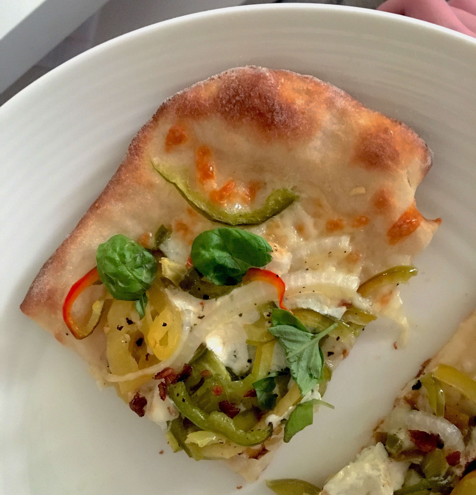

Food
On this page we hope to show you some of the things we're cooking. We're excited to share some recipes and techniques and learn some too!
Pepper Pizza
August 27, 2018
This summer, we’ve been enjoying fresh local vegetables from a CSA. It’s been really nice to have lots of produce coming in every week but it’s also an interesting challenge to come up with recipes to use up a selection of things we might not normally buy. This week we had a pile of sweet peppers and some leftover bread dough in the fridge so we decided to make a big pepper pizza. We based it on this recipe from the NY Times with quite a few changes to incorporate ingredients we already had in the fridge as well as scale back the quantity for two people.
- Used the rest of a jar of pickled jalapeños instead of fresh
- Added pickled banana peppers
- Used white onion instead of red
- Used crumbled bacon instead of sausage
- Omitted marjoram
- Used marinated fresh mozzarella with red pepper instead of plain
This was a great easy meal to prepare (especially if you already have the dough on hand) and turned out to be really versatile and delicious allowing for us to make all of the changes we did.